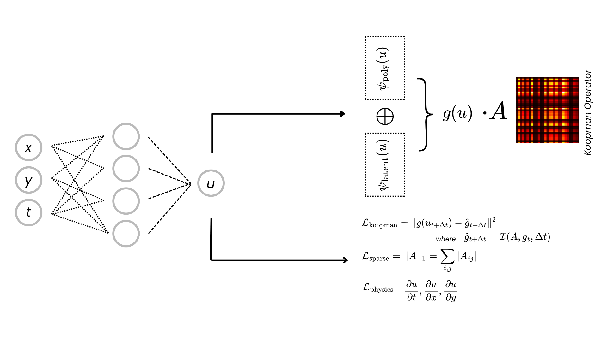
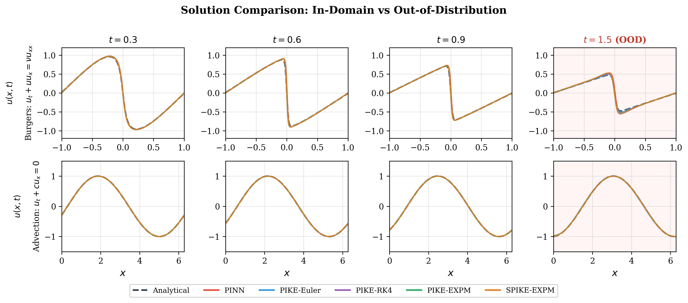
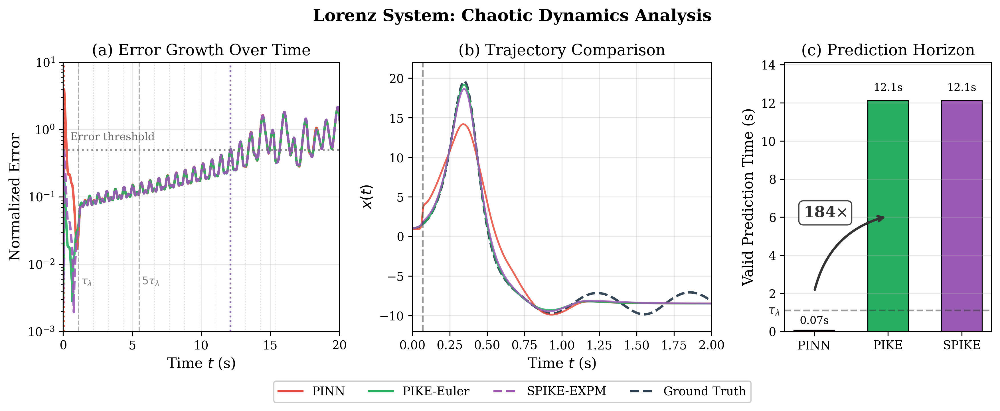
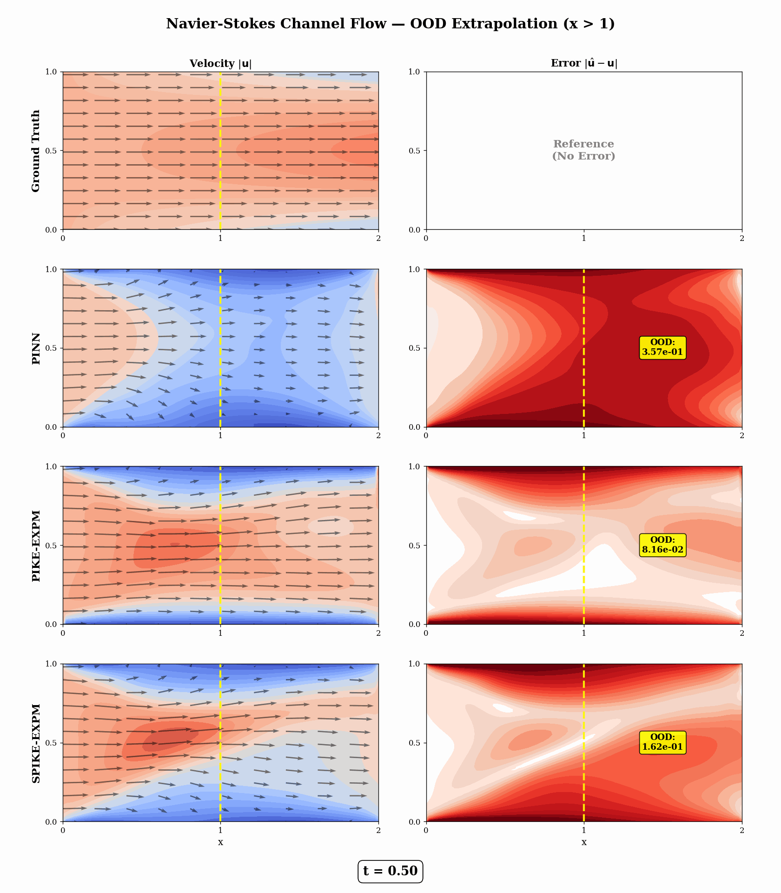

Abstract
Physics-Informed Neural Networks (PINNs) solve differential equations mesh-free by embedding physical constraints into training — but they tend to overfit the training domain and generalize poorly when extrapolating beyond it.
SPIKE (Sparse Physics-Informed Koopman-Enhanced) regularizes PINNs with continuous-time Koopman operators to learn parsimonious dynamics. By enforcing linear dynamics dz/dt = Az in a learned observable space, both PIKE (without explicit sparsity) and SPIKE (with L1 regularization on A) learn sparse generator matrices — embodying the parsimony principle that complex dynamics admit low-dimensional structure.
Across parabolic, hyperbolic, dispersive, and stiff PDEs — including fluid dynamics (Navier–Stokes) and chaotic ODEs (Lorenz) — SPIKE delivers consistent gains in temporal extrapolation, spatial generalization, and long-term prediction accuracy. The continuous-time formulation with matrix-exponential integration provides unconditional stability for stiff systems.
Key Ideas
PINN-first, not Koopman-first
Rather than bolting physics onto a Koopman autoencoder, SPIKE keeps the PINN as the base model and adds Koopman structure as an auxiliary regularizer that promotes sparse, interpretable dynamics.
Sparse generators
L1 regularization on A reduces non-zero entries by up to 5.7×, capturing complex PDE dynamics with sparse generator matrices — and even fixing unstable spectra (reaction-diffusion).
Dual observable embedding
An explicit polynomial library (capturing terms like u−u³) combines with a learned latent map that correlates with hidden structure — up to 0.99 with uxx.
Generator, not propagator
Learning dz/dt = Az directly avoids the diagonal-dominance trap of discrete-time Koopman (K → I as Δt → 0). Matrix-exponential integration gives unconditional stability.
Generalization beyond the training domain
Solutions stay accurate not only in-domain but when extrapolating in time. The shaded panels (red) sit outside the training window t∈[0,1].

Chaos & fluids


Selected quantitative results
Out-of-distribution physics-residual MSE for temporal extrapolation t∈[3,5] (lower is better). Full tables for all systems and regimes are in the repository.
| System | PINN | PIKE-Euler | PIKE-RK4 | PIKE-EXPM | SPIKE-EXPM |
|---|---|---|---|---|---|
| heat | 7.52e-4 | 2.17e-3 | 7.00e-4 | 7.97e-4 | 8.03e-4 |
| burgers | 2.77e-2 | 1.15e-2 | 2.97e-2 | 2.91e-2 | 2.91e-2 |
| kdv | 8.89e-3 | 2.49e-2 | 9.99e-3 | 1.42e-3 | 1.81e-3 |
| allen-cahn | 6.21e-2 | 1.11e-1 | 6.46e-2 | 9.76e-2 | 9.58e-2 |
| reaction-diffusion | 9.72e-3 | 1.73e-2 | 1.06e-2 | 1.17e-2 | 1.12e-2 |
Method variants
- PINN — standard physics-informed baseline (no Koopman regularization).
- PIKE-Euler / RK4 / EXPM — Koopman-enhanced PINN; the suffix is the integrator used to roll out dz/dt = Az (forward Euler, Runge–Kutta 4, or matrix exponential).
- SPIKE-EXPM — PIKE with L1 sparsity on the generator A and matrix-exponential integration; the full method.
BibTeX
@inproceedings{minoza2026spike,
title = {{SPIKE}: Sparse Koopman Regularization for
Physics-Informed Neural Networks},
author = {Jose Marie Antonio Mi{\~n}oza},
booktitle = {The Third Conference on Parsimony and Learning
(Proceedings Track)},
year = {2026},
url = {https://openreview.net/forum?id=qPm2f2OE7j}
}